There is an Unused Sport in Wii Sports Resort, and you can get it using gecko codes.The sport just says "?" and the description simply says "Not Found"
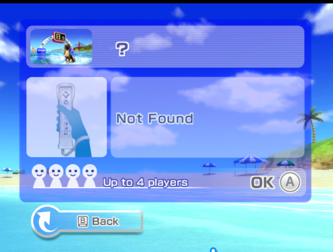If you load the Sport, it will either show 2 players, 4 players, or No Players.
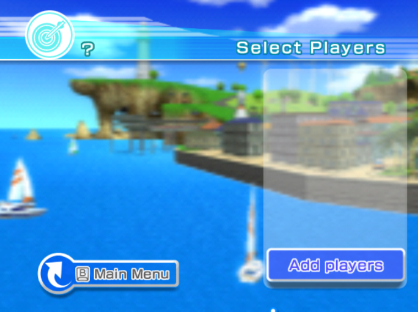If you load the Sport, it will either go back to the player select screem, or show Swordplay Duel with a "Level" score at 0.
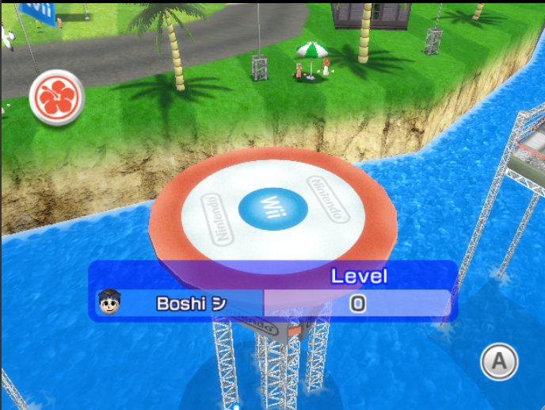If you try loading the stamps, it will load all 5 of the stamps blank
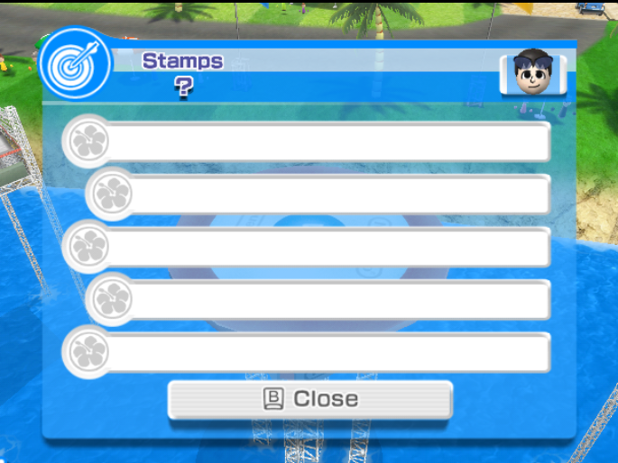If you click a stamp, a message called "NotFoundMsg 39999_40" will show up
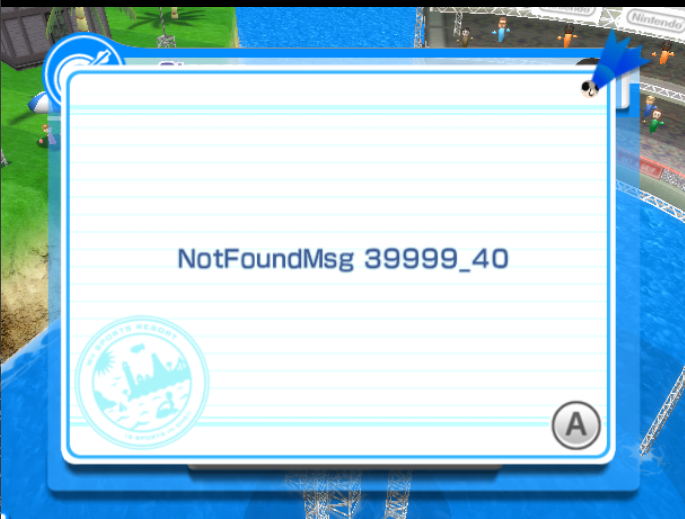It will play the game as nomral Swordplay Duel, you can't seem to level up and once your done, you'll get this Unused Screen on the Title Screen (the thing that's like "Your Mii played Golf!")
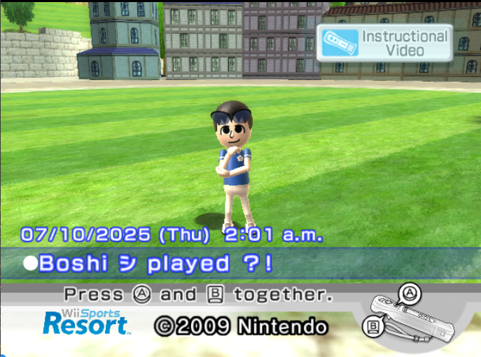Summary: This is either something Unused or just a sport that uses the Default Parameters. Thanks to Fxreboys on Discord, he explained that the Game Info screen is just a template. The Player Select is used when changing the Player List, Swordplay Duel seems to be the default game that loads, Archery is the Default for layouts, and The Title Screen thing happens when a Mii gets all pro or superstar.
I know that the texture for the Dummy Mii Face has already been found, but no one has found a screenshot of the face being used in the game (maybe because it's unused)
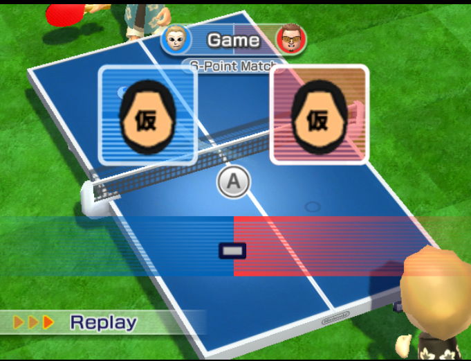Using Dolphin Memory Engine, you can get a training screen with text placed wrong. I don't know how to describe it in words, so the image will help. If you press A on this screen the game will crash.
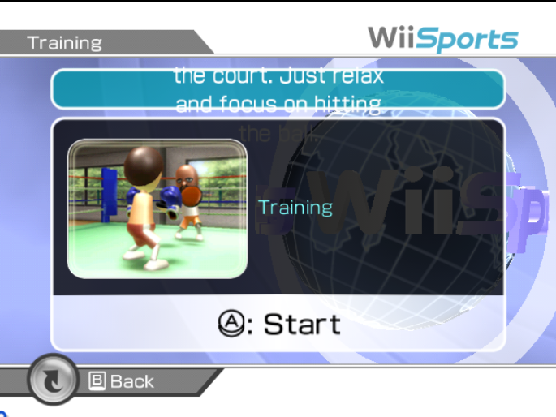I'm pretty sure you already saw this by TCRF, but they didn't provide any good screenshots of it. (besides stage 21 by me) I couldn't get Stages 28-30 working, and stages 26-27 would only work on Dolphin.
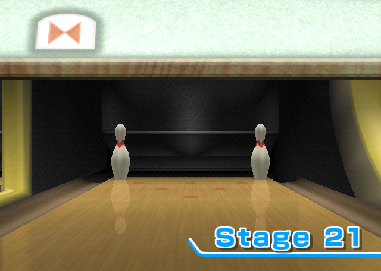 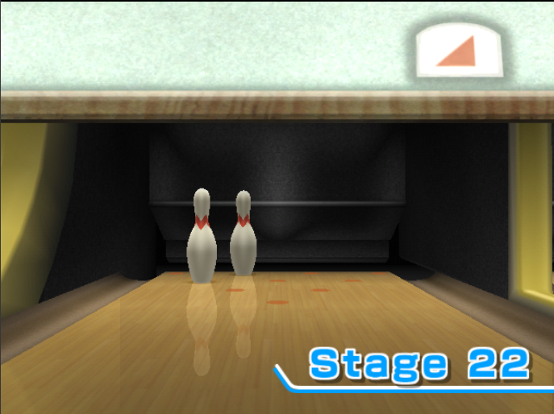 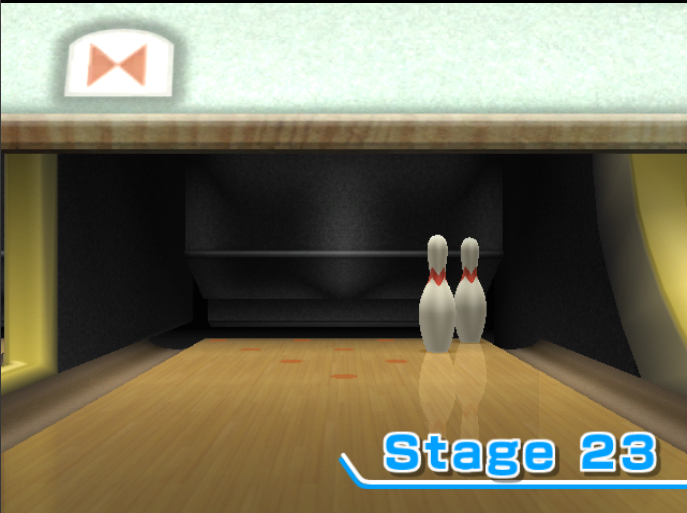 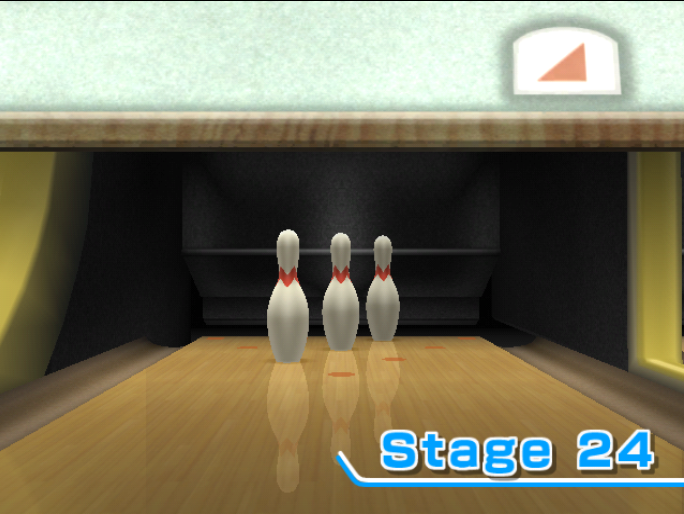 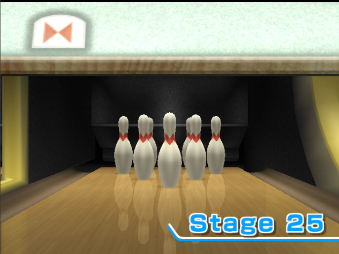 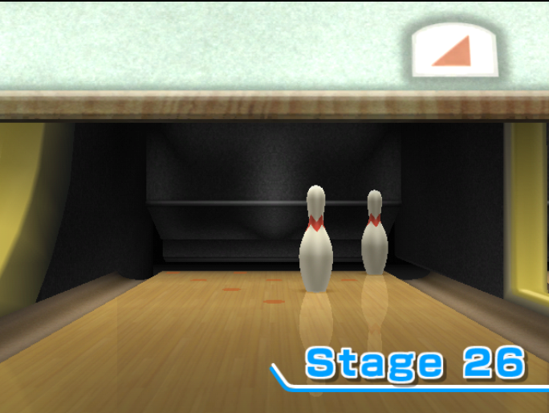 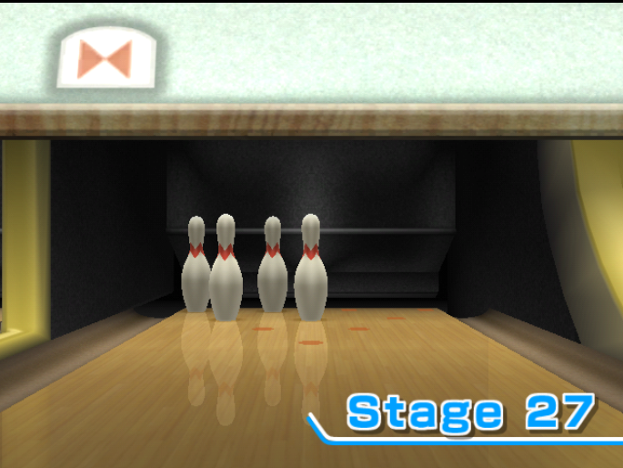Same thing as the Picking Up Spares one, even has the same amount of stages I could get working.
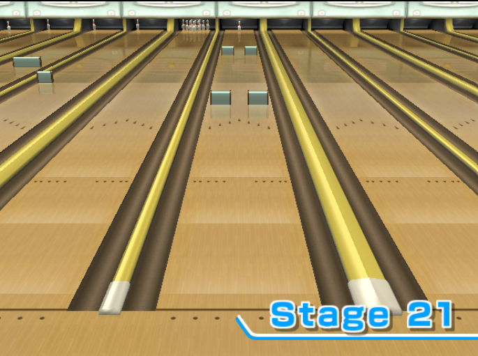 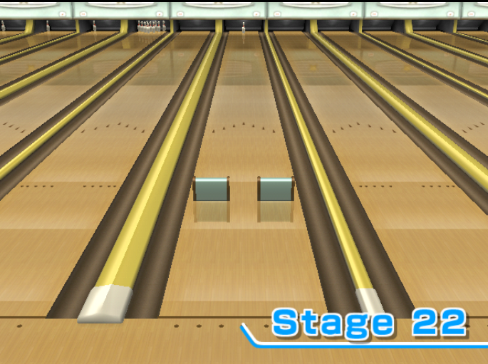 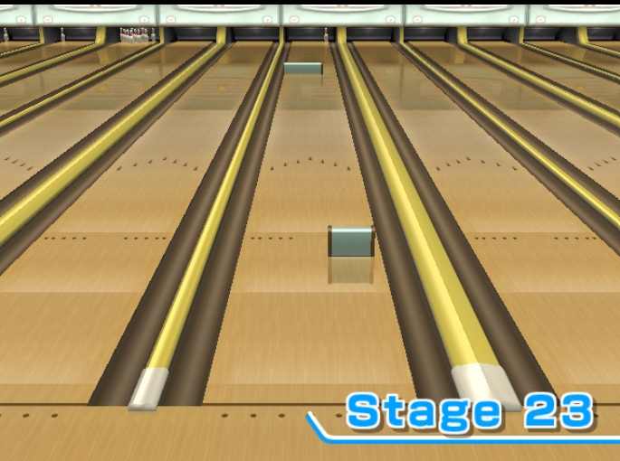 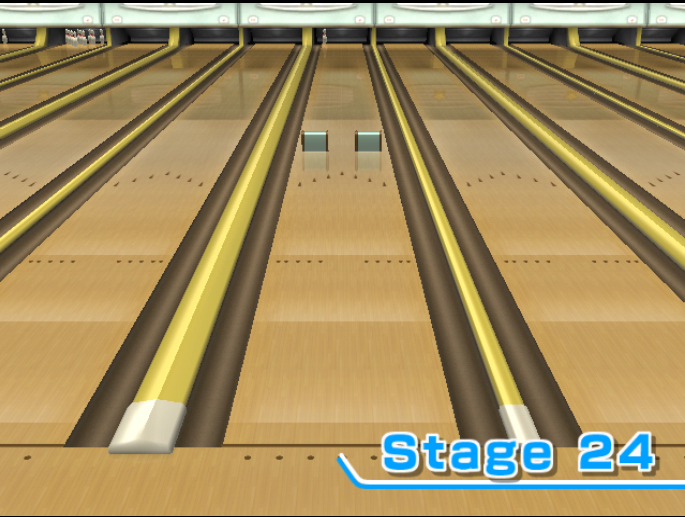 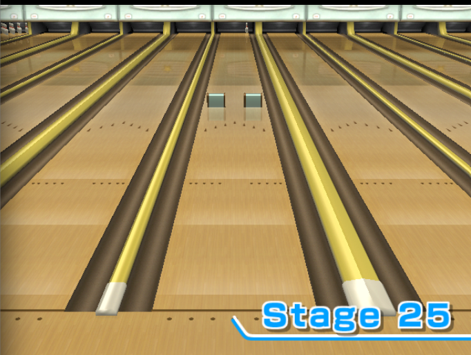 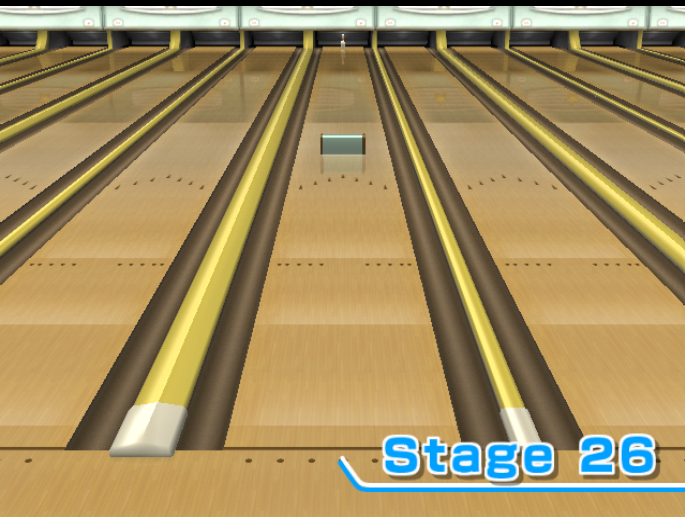 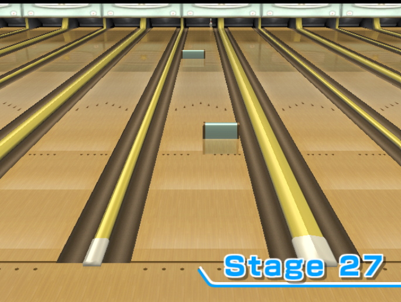